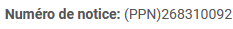

Introduction
{kind=link}
NB: ils sont identiques à ceux utilisés dans WinIBW.

Si vous intervenez sur plusieurs bibliothèques, changez de login à chaque fois.
Aller sur le menu ‘Recherche’ (on tombe sur cet écran directement après la connexion).


{kind=link}
Ne pas entrer ce préfixe pour une recherche dans Colodus, juste les 9 chiffres.
{kind=link}
{kind=link}
S’il n’y a pas de résultat, il est possible que l’ouvrage date d’avant 2007, où l’ISBN différait un peu du code-barre commercial. Il suffit alors d’enlever le ‘978’ du début et de remplacer le dernier chiffre par
*et de relancer la recherche. Dans notre exemple,9782759224166devient275922416*. S’il n’y a pas de code-barres commercial, rechercher l’ISBN sur la 4e de couverture ou à l’intérieur de l’ouvrage et le taper à la main (avec ou sans tirets).
Si l’ouvrage n’a pas d’ISBN (parution avant les années 1970) ni de code-barres commercial visible, il faut passer par une recherche auteur/titre en dépliant le menu ‘Autres critères de recherche’
{kind=link}
Dans les menus déroulants, on choisit le type d’index (auteur, titre, éditeur, etc.) qu’on interroge et dans le champ de saisie le contenu recherché. Mettre le maximum d’informations possibles, sinon il risque d’y avoir beaucoup de résultats (des millions de notices dans le Sudoc) !
{kind=link}
On tombera sans doute sur une liste de résultats dans lequel il faudra faire son choix :

Bien regarder l’année d’édition, l’éditeur, le détail du titre…
La 2e colonne indique de façon codée la nature du document. On s’occupe en général de livres imprimés, ce qui se traduit par un code ‘Aax’. Toute autre valeur sur les 2 premiers caractères indique un document d’un autre type (Oa : livre électronique, Ab : revue imprimée, Na : Cd audio, Ba : vidéo, etc.). Pour un livre, il ne faut donc pas choisir une notice d’un autre type que ‘Aa’.
Dans cette colonne, l’astérisque * signale que des membres du Sudoc sont localisés sur cette notice, et le plus +, que le SCD est localisé dessus.
Cliquer sur n’importe quel champ de la notice sélectionnée pour tomber sur l’affichage détaillé de la notice et vérifier rapidement une dernière fois qu’on est sur le bon document, notamment au niveau du support physique :
{kind=link}
Bien vérifier que toutes les informations de la notice concordent avec le document que vous avez en main avant de choisir une notice.